Financial & Business Intelligence Analyst
Financial & Business Intelligence Analyst with a dual background in Finance and Management Information Systems, focused on turning operational and commercial data into structured reporting, automation workflows, and decision-support dashboards.
Experienced in supply chain analytics, Excel and Python automation, Power BI, Streamlit, SQL, Power Automate, APIs, and ERP-driven reporting across finance, inventory, and operations environments.
I come from a background in Finance and Management Information Systems, combining business knowledge with technical and analytical skills to solve problems, improve processes, and support better decision-making.
I enjoy outdoor sports, spending time in nature, and constantly learning something new. I value curiosity, continuous improvement, and building practical solutions that create real business impact.
Context: Built dashboard solutions to consolidate operational, contract, and performance information into interactive views that support faster analysis and more structured decision-making. My dashboard experience combines Power BI, Python (Streamlit), and Excel-based reporting.
Tools: Power BI, Python, Streamlit, Excel, pandas, Plotly
What I did: Designed and developed dashboards for KPI monitoring, contract detail analysis, vessel and operational reporting, and inventory-oriented forecast views. The solutions included interactive filters, drill-down tables, summary cards, category breakdowns, and visual outputs tailored to business users.
Technical Approach: Combined data preparation, feature engineering, forecasting logic, and dashboard rendering into reusable workflows. In Streamlit, I built functions for robust data loading, metric standardization, forecasting thresholds, and business-facing analytical views. In Power BI and Excel, I structured dashboards to improve readability, navigation, and reporting efficiency.
Business Value: These dashboards improved visibility across large datasets, reduced manual reporting effort, and made operational and analytical information easier to consume for stakeholders.
Impact: Enabled faster access to key metrics, more interactive analysis, and clearer decision support across operational and reporting workflows.
Confidentiality: Internal datasets, logic, and full deliverables are proprietary; this portfolio summary highlights the dashboard design, analytical logic, and business value of the solutions.
Dashboard Snapshots
Selected examples of dashboard interfaces developed for operational visibility, reporting support, and analytical exploration across business and independent projects.
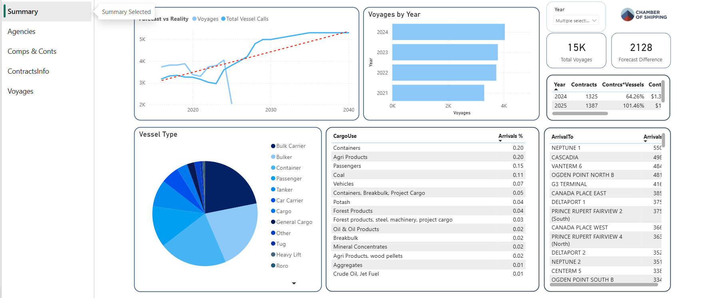
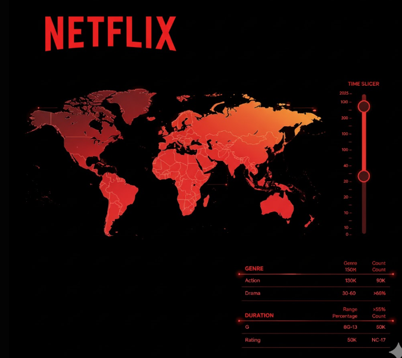
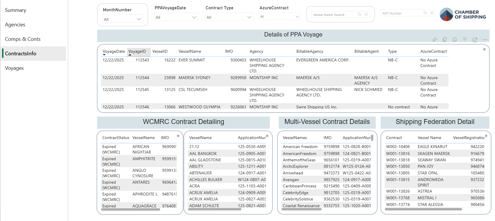
Selected Technical Logic
Redacted code excerpts showing some of the core analytical and dashboard-building logic behind the Streamlit application.
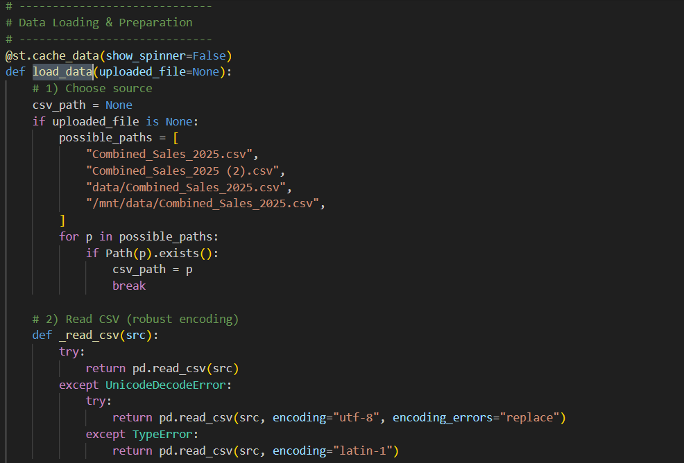
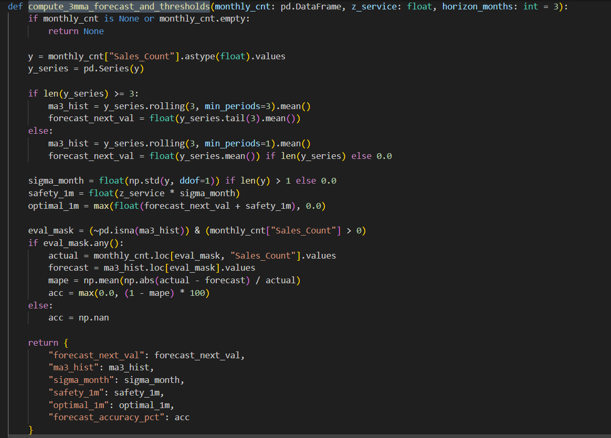
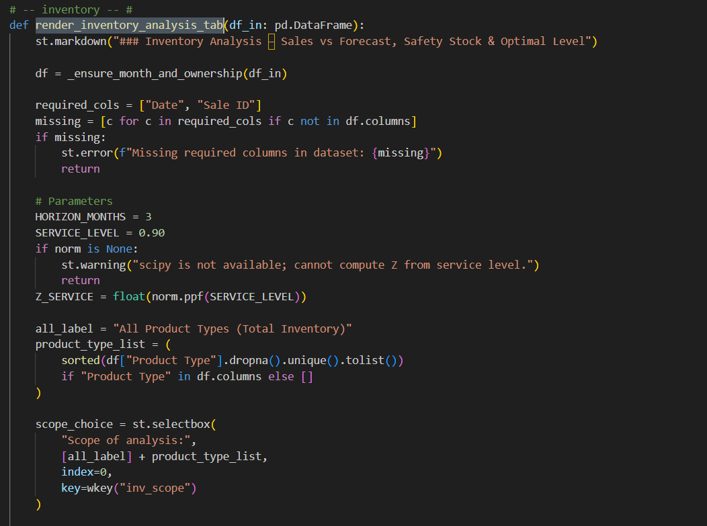
Context: Appointment and revenue-related information from Calendly was previously extracted manually, requiring users to navigate schedules, type details into Excel, apply business rules by hand, and then transfer the final file to a shared folder for accounting use.
Tools: Power Automate, Calendly API, CSV transformation, business rules logic, Excel
What I did: Developed an automated workflow that extracts Calendly data through the API, transforms and organizes it into a structured CSV file, and applies predefined business rules to assign each generated amount to the correct cost center or corporate account.
Business Value: The automated output supports internal administration, month-end close activities, and annual audit processes by improving consistency, traceability, and reporting readiness.
Impact: Reduced manual user interaction by approximately 90%, improved processing efficiency, and lowered the risk of manual entry errors.
Confidentiality: Workflow logic, source files, and internal accounting rules are proprietary; this portfolio summary highlights the process design and business impact.
Workflow Snapshots
Redacted screenshots showing the workflow structure used to automate extraction, transformation, validation, and allocation logic.
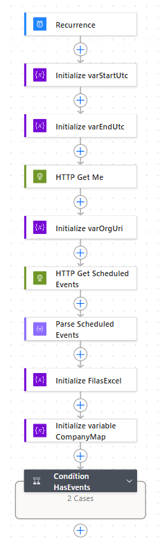
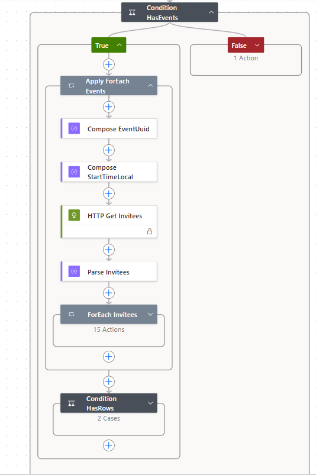
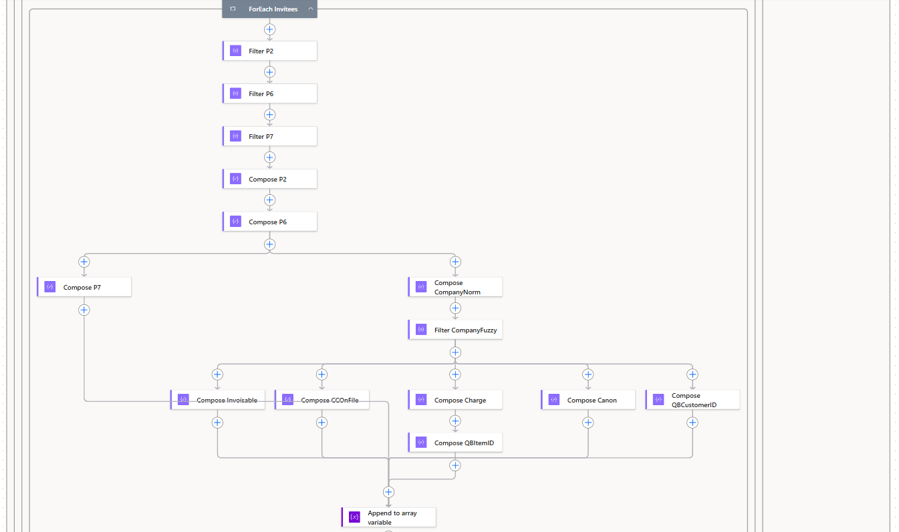
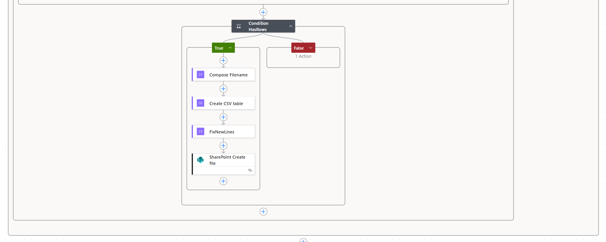
Context: Critical maritime traffic information was manually collected every morning from two different sources: a user-access API portal and a public daily PDF report containing vessel traffic updates. The manual process required early-morning user intervention and delayed access to relevant information for decision-making.
Tools: Python, API integration, web scraping, PDF parsing, CSV transformation, workflow automation
What I did: Developed a Python-based automated process that extracted data from an authenticated API source, applied filtering and selection logic, and transformed the results into a structured CSV file. In parallel, the solution downloaded a public PDF report through web scraping, parsed the document in Python, selected only the records that met predefined business criteria, and consolidated both sources into a single daily output.
Business Value: The consolidated file was distributed automatically to stakeholders every day, giving them earlier access to relevant operational information and supporting faster, more informed decisions.
Impact: Eliminated the need for manual early-morning execution, improved consistency in data delivery, and transformed a repetitive manual process into a scheduled daily routine.
Confidentiality: Source logic, scripts, and business filters are proprietary; this summary focuses on the workflow design and operational impact.
Workflow Snapshot
Redacted screenshot showing the automated Python workflow used for extraction, filtering, consolidation, and daily delivery.
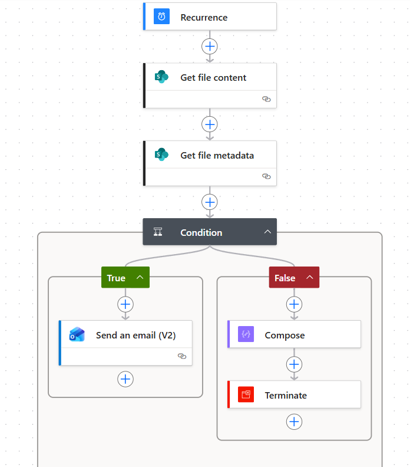
Context: Multiple Excel files containing large operational datasets needed to be cleaned, standardized, and prepared for reliable reporting. Because each file contained more than 14,000 rows, manual processing was inefficient and increased the risk of inconsistencies.
Tools: Python, openpyxl, dataclasses, Excel automation, data validation
What I did: Built a Python workflow that automated the ingestion and preparation of multiple Excel files by detecting header structures, identifying valid data ranges, normalizing formats, and organizing rows into structured records for downstream analysis.
Technical Approach: Designed reusable helper functions to manage common spreadsheet challenges such as variable layouts, inconsistent field types, empty row ranges, and date parsing. The workflow also included validation logic and controlled writing routines to ensure safer updates and more reliable outputs.
Impact: Improved data consistency, reduced manual preparation time, and created a scalable process for transforming raw Excel files into analysis-ready datasets.
Confidentiality: Internal logic, file structures, and full code are proprietary; this portfolio summary focuses on the workflow architecture and technical contribution.
Selected Technical Logic
Redacted code excerpts highlighting key logic used to process large Excel datasets reliably and at scale.
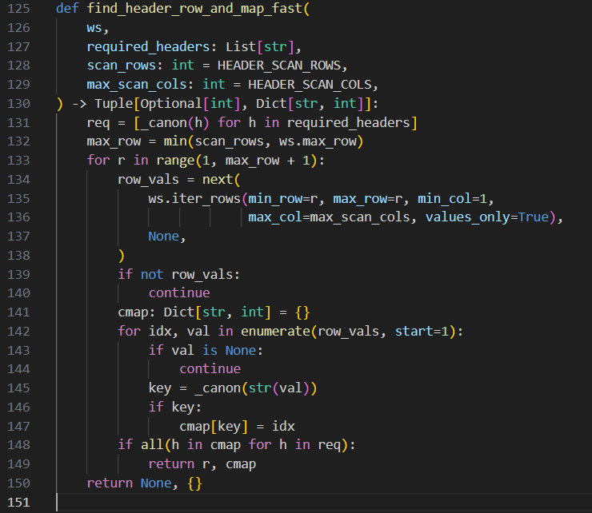
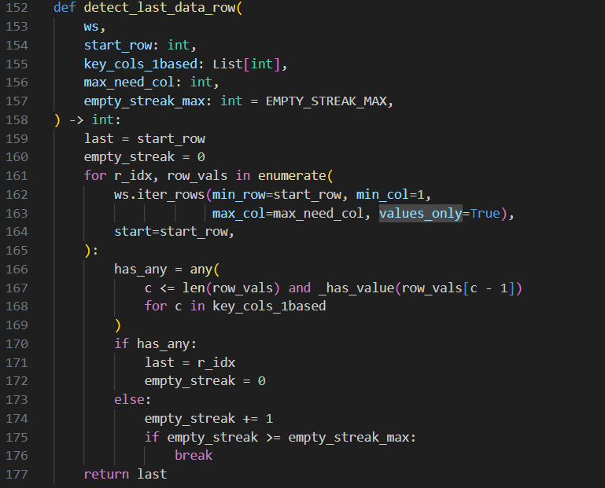
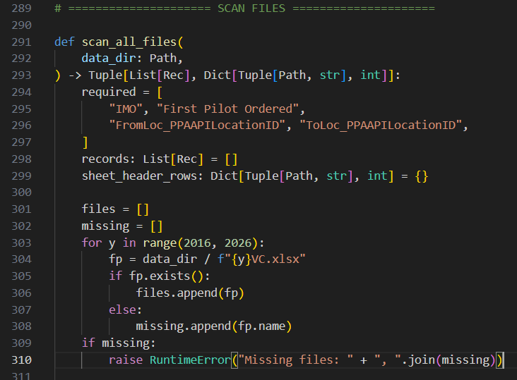
Based in Vancouver, BC. Open to analyst, business intelligence, supply chain, reporting, inventory, and automation-focused roles.
If you would like to discuss my experience, review my resume, or connect regarding opportunities, feel free to reach out.